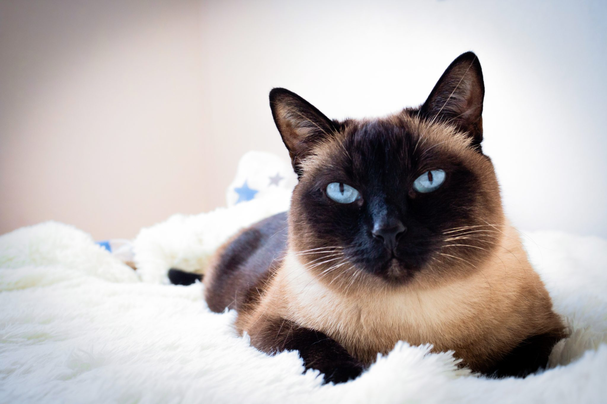

TODO: Transforme o texto "Voltar" abaixo em hiperlink que leva o usuário para a página com o sumário de todos os gatos
Voltar
A aparência de um gato Siamês é o que mais chama atenção: olhos bem azuis e pelos claros com extremidades mais escuras (rosto, orelhas, patas e rabo). Com postura elegante, esta raça era comum em companhias para reis na Tailândia.